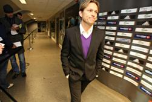
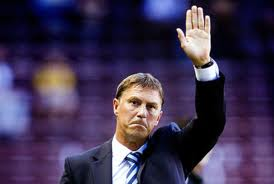

Trenerkontinuitet

Nå har det skjedd igjen; Molde holder på å rykke ned, sparker treneren og plukker plutselig poeng som en overivrig multesanker på Finnmarksvidda.
"Kjell har styrets fulle tillit" sa direktør-Tarje, kanskje de
ordene en fotballtrener frykter mest å høre, og ganske riktig;
dagen etter at disse famøse ord var uttalt så var tilliten
tydeligvis blåst vekk og Jonevret måtte rusle slukøret ut av
Røkkeløkka.
Kan det være så enkelt som at moldenserne gir fyken til en moderat
ballansert svenske og erstatter han med en hissig tysker, så kommer
poengene trillende? Svensken hadde kjempesuksess året før mens
tysker'n da fikk en kald skulder og måtte flykte fra Stavanger,
njaa - skeptisk.

Hva er det i tilfelle som forvandler et lag mest, er det at man
blir kvitt den treneren som går av eller er det den nye som kommer
inn som er så fantastisk? Hvis det første er tilfellet så har
Nordli kun hatt flaks og bløffet seg til lønn fra halve
tippeligaen, men om svaralternativ nr.2 er det riktige så har han
jo full rett til å kalle seg Messias. Med høy mirakelfaktor har han
jo da faktisk egenhendig reddet en haug av klubbene i de to øverste
divisjonene.

Nei det er vel grunn til å tro at svaret er mer nyansert enn som
så. Molde, Brann og Hønefoss har alle gjort de samme vurderingene
og vist henholdsvis Jonevret, Nilsen og Sundgott veien ut av
stadion. Lillestrøm og Stabæk var i samme situasjon lenge, men
valgte å beholde sine menn … og tabellen lyver som kjent ikke; de
to sistnevnte ligger høyere på tabellen enn de tre første i
skrivende stund, til tross for den umiddelbare gevinsten man blir
forespeilet ved å skifte trener.
Når det gjelder kontinuitet så kan vel for øvrig ManU og Rosenborg
skrive under på at både Ferguson og Eggen representerer gode
eksempler på vellykkede kontinuitetsbærere. Nå er jeg rimelig
overbevist om at det også har vært diskusjoner om trenerkasting i
styrerommene både i Manchester og Trondheim, men det har nok heller
vært forårsaket av uoverveide hjerneløse uttalelser i pressen enn
akutt poengnød.

Her er trenerne som skulle kjempe om tittelen i Tippeligaen 2007 og
mange av disse så sikkert for seg en lang og god karriere i nettopp
denne klubben:
Per Joar Hansen, Aalesund
Anders Grönhagen FFK
Dag-Eilev Fagermo, Godset
Tor Thodesen, Sandefjord
Stig Inge Bjørnebye, Start
Jan Jönsson, Stabæk
Henning Berg, Lyn
Steinar Nilsen, Tromsø
Knut Tørum, Rosenborg
Tom Nordlie, Lillestrøm
Uwe Rösler, Viking
Arne Sandstø, Odd
Petter Myhre, Vålerenga
Mons Ivar Mjelde, Brann
.... nå, tre år senere er det bare Janne som fortsatt er på
sin post, og selv han har begynt å anlegge mustasje for å feire jul
i bartebyen.

Alle lagene i nedrykkstriden vurderer nok en eller annen gang i løpet av sesongen å sparke treneren sin. Selvsagt er det forskjell på ressurser og ambisjoner hos de forskjellige klubbene. Der hvor den jevne bergenser ønsker å rive stadion og koke Bruun-Hansen i olje om de havner på femteplass et år, vil nok både et tilfeldig valgt styremedlem i Kongsvinger eller en trofast Hønefoss supporter gi den ene armen for å oppnå noe tilsvarende.
Forskning gjennom de siste femten år i Tippeligaen viser imidlertid at de som beholder treneren vil over tid ta flere poeng enn de som kvitter seg med sin, så kan man jo fundere hvorfor syv trenere sparkes i snitt hver sesong i Norges øverste serie … og ikke minst kan man spørre seg om ikke Molde ville gjort det like bra om de hadde beholdt Jonevret ... nei du, det får vi nok aldri vite.

Frisk Asker oldboys har nå hatt samme trener i fjorten år, noe som jo har resultert i at vi er med i medaljekampen i den hjemmelige toppserien hvert år og har stort sett deltatt i Europa kontinuerlig siden 1999.
(Nå foreslo likevel styret å sparke både treneren og alle spillerne forrige sesong, riktignok mer på grunn av evnen til selvstendig tankegang enn mangel på sportslig suksess. Red.anm.)
Selv om det kan virke som jeg her gjør hva jeg kan for å lovprise kontinuitet på trenersiden så vil jeg likevel påpeke klart og tydelig at rollen som oldboystrener som vanlig vil stilles til disposisjon på neste årsmøte og at hvem som helst har undertegnedes tillatelse til å fremme sitt ønske om å bekle denne posisjonen, og med meget stor sannsynlighet også vil få innfridd sitt ønske.